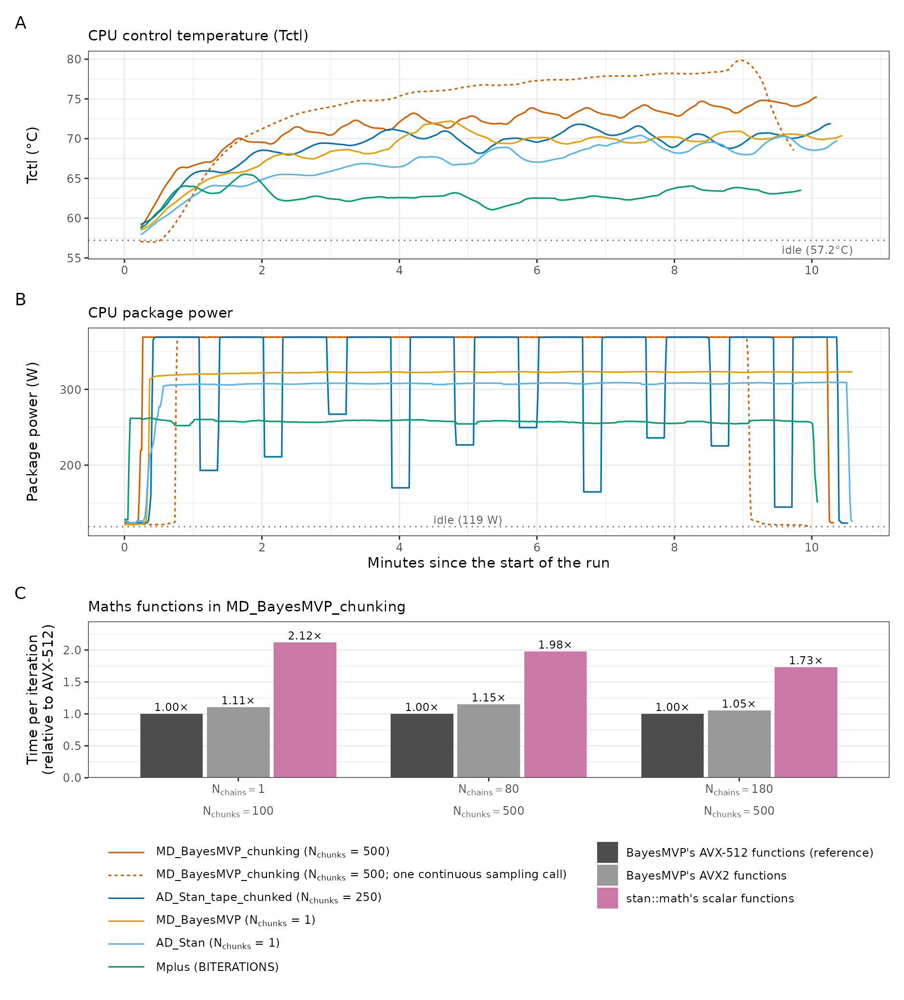
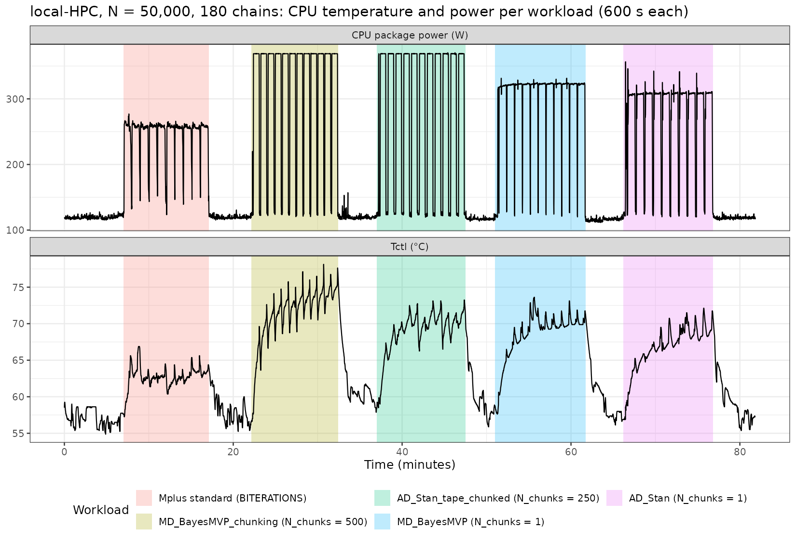

Design
All runs were on the local-HPC (AMD EPYC 9654; 96 cores, i.e., 192 threads with SMT, in 12 CCDs), with N = 50,000, Nchains = 180 and Nthreads/chain = 1 (i.e., the same settings as the other full-load runs of E4), and with the CPU's default package power limit of 360 W, which we also used for all of the timings in the paper. We ran five workloads: MD_BayesMVP_chunking (Nchunks = 500), AD_Stan_tape_chunked (Nchunks = 250), MD_BayesMVP and AD_Stan (i.e., without chunking; Nchunks = 1), and Mplus (standard, with BITERATIONS).
Each workload sampled for ~600 s, after the CPU had cooled to within 2 °C of the idle baseline (the CPU's control temperature, Tctl; the idle baseline is the mean over the 300 s before the first run). Every second, we logged Tctl, the temperatures of the 12 CCDs, the CPU package energy (via RAPL; hence the package power) and the pages swapped in and out. The R workloads ran as a sequence of sampling calls, with short pauses between them (~5-8 s for NicoStan+BayesMVP and ~15-20 s for the Stan model). The hardware counters (top-down dispatch slots, and floating-point instructions and their widths) were read in separate runs with the same settings, using pmc_stat_topdown.c (see the Linux commands on the paper page).
Temperature and power


MD_BayesMVP_chunking. (C) Time per iteration of MD_BayesMVP_chunking with BayesMVP's AVX2 maths functions, and with stan::math's scalar functions, relative to BayesMVP's AVX-512 maths functions (360 W; mean of two runs each).With chunking, both models ran at the CPU's package power limit (360 W, read as ~369 W by RAPL; similarly, with a 400 W limit, RAPL read up to 410 W), whereas without chunking the CPU drew 308-322 W, and with Mplus only 258 W. Tctl was correspondingly highest for MD_BayesMVP_chunking (74.5 °C over the last 120 s, i.e., 17.3 °C above idle), and lowest for Mplus (63.6 °C, i.e., +6.3 °C), despite all 180 threads being busy in each case. With chunking, Tctl was still rising slowly after 10 minutes (by 0.65 and 1.66 °C per minute over the last 120 s, for MD_BayesMVP_chunking and AD_Stan_tape_chunked, respectively).
| Workload | Package power whilst sampling (W) | Tctl, last 120 s (°C) | Peak Tctl (°C) | Rise over idle (°C) | Tctl slope, last 120 s (°C/min) | Instructions per cycle | DRAM traffic (GB/s) |
|---|---|---|---|---|---|---|---|
| Idle | 119 | 57.2 | - | - | - | - | - |
MD_BayesMVP_chunking (Nchunks = 500) | 369 | 74.5 | 78.1 | 17.3 | 0.65 | 1.32 | 169 |
AD_Stan_tape_chunked (Nchunks = 250) | 369 | 70.4 | 73.2 | 13.2 | 1.66 | 1.02 | 267 |
MD_BayesMVP (Nchunks = 1) | 322 | 70.4 | 73.6 | 13.2 | -0.30 | 0.03 | 346 |
AD_Stan (Nchunks = 1) | 308 | 69.2 | 72.1 | 11.9 | 0.78 | 0.21 | 300 |
| Mplus (BITERATIONS) | 258 | 63.6 | 66.9 | 6.3 | -0.20 | 0.22 | 50 |
The power whilst sampling is the median of the per-second package power over each run (without its first 30 s); the instructions per cycle and the DRAM traffic (measured at the memory controllers) are from the same runs.


One continuous sampling call
Since the CPU cooled slightly during the pauses between the sampling calls, we also ran MD_BayesMVP_chunking (Nchunks = 500) as one continuous sampling call (~580 s of sampling, after an idle baseline of 56.4 °C). In this case, the package power stayed at 369 W throughout, Tctl reached 78 °C (mean between 400 and 520 s after the start), and up to 84.3 °C as the first chains finished (after ~9 minutes; see the dashed line in Figure 1).
Hardware counters
| Workload | Ops per cycle | Back-end bound (%) | Memory bound (%) | Core bound (%) | Front-end bound (%) | FP instructions per core-cycle | FP uops: scalar / 128 / 256 / 512-bit (%) |
|---|---|---|---|---|---|---|---|
MD_BayesMVP_chunking (Nchunks = 500) | 1.34 | 47.3 | 23.7 | 23.6 | 3.8 | 0.44 | 1.6 / 11.0 / 0.9 / 86.5 |
AD_Stan_tape_chunked (Nchunks = 250) | 1.06 | 59.3 | 37.3 | 22.0 | 8.1 | 0.14 | 39.8 / 57.8 / 0.7 / 1.7 |
MD_BayesMVP (Nchunks = 1) | 0.04 | 90.5 | 88.3 | 2.2 | 8.5 | 0.02 | 1.6 / 4.3 / 6.8 / 87.2 |
AD_Stan (Nchunks = 1) | 0.21 | 87.8 | 75.0 | 12.8 | 4.6 | 0.04 | 41.9 / 55.1 / 1.0 / 2.0 |
| Mplus (BITERATIONS) | 0.26 | 83.7 | 55.0 | 28.7 | 1.9 | 0.06 | 49.8 / 50.2 / 0 / 0 |
The top-down columns are the shares of the CPU's dispatch slots (AMD's top-down counters); memory bound is the share of the slots lost to the back end whilst loads had not completed. Without chunking, 75-88% of the dispatch slots of the R workloads were memory bound, compared with 24% (MD_BayesMVP_chunking) and 37% (AD_Stan_tape_chunked) with chunking. Mplus was memory bound for 55% of its slots, but at only 50 GB/s of DRAM traffic, i.e., it is limited by memory latency rather than memory bandwidth. Furthermore, MD_BayesMVP_chunking retired only 0.44 floating-point instructions per core-cycle (whatever their width), i.e., well below the throughput of the CPU's floating-point units. Its floating-point uops were mostly 512-bit (AVX-512; 87%), whereas those of the Stan model and Mplus were scalar or 128-bit (96% or more).
AVX-512 vs. AVX2 build
We also built BayesMVP without AVX-512 (i.e., AVX2 only, from the same source), and timed MD_BayesMVP_chunking with both builds (two-run difference timing, as in E4; mean of two runs each). The AVX2-only build was 7.2% slower, both with Nchains = 1 and with Nchains = 180.
| Nchains | Nchunks | AVX2-only build (chain-iterations/s) | AVX-512 build (chain-iterations/s) | AVX-512 build / AVX2-only build |
|---|---|---|---|---|
| 1 | 100 | 5.65 | 6.09 | 1.078 |
| 180 | 500 | 327.6 | 353.0 | 1.078 |
Maths functions vs. stan::math
In the same (AVX-512) build, BayesMVP's run-time vectorisation option (vect_type) selects its AVX-512 or AVX2 maths functions (exp, log, tanh, Φ and related functions), or stan::math's scalar functions. With stan::math's scalar functions, MD_BayesMVP_chunking was 1.73-2.12× slower than with BayesMVP's AVX-512 functions, whereas with BayesMVP's AVX2 functions it was only 1.05-1.15× slower. In other words, BayesMVP's vectorised maths functions are a key part of its speed, whilst the extra width of AVX-512 over AVX2 is a minor factor. The gain over stan::math was largest with Nchains = 1 (2.12×), and smallest with Nchains = 180 (1.73×), when the CPU ran at its package power limit.
| Nchains | Nchunks | AVX-512 functions (chain-iterations/s) | AVX2 functions (chain-iterations/s) | stan::math scalar functions (chain-iterations/s) | Time per iteration vs. AVX-512: AVX2 / stan::math |
|---|---|---|---|---|---|
| 1 | 100 | 6.09 | 5.50 | 2.87 | 1.11× / 2.12× |
| 80 (one per physical core, 80 of 96 cores) | 500 | 275.9 | 240.4 | 139.6 | 1.15× / 1.98× |
| 180 | 500 | 348.9 | 331.3 | 201.3 | 1.05× / 1.73× |
All rates use two-run difference timing (i.e., the long run minus the short run, which removes the fixed start-up cost of each call), with the mean of two runs each, at the default 360 W package power limit.
400 W package power limit
Since the chunked runs were power-limited, we repeated the maths-function comparison with the CPU's package power limit raised from 360 W to 400 W (the maximum for this CPU; set at run time via AMD's HSMP interface), with Nchains = 1, 96 (one per physical core) and 180. With Nchains = 180, MD_BayesMVP_chunking was 5.5-6.9% faster than at 360 W (e.g., 370.6 vs. 348.9 chain-iterations per second with BayesMVP's AVX-512 functions), confirming that it is limited by the package power at 360 W, whilst the relative times of the three maths-function variants were similar.
| Nchains | Nchunks | AVX-512 functions (chain-iterations/s) | AVX2 functions (chain-iterations/s) | stan::math scalar functions (chain-iterations/s) | Time per iteration vs. AVX-512: AVX2 / stan::math |
|---|---|---|---|---|---|
| 1 | 100 | 5.89 | 5.59 | 2.88 | 1.05× / 2.05× |
| 96 (one per physical core) | 500 | 324.2 | 296.5 | 171.3 | 1.09× / 1.89× |
| 180 | 500 | 370.6 | 354.2 | 212.4 | 1.05× / 1.74× |
Files
All files are in paper_1_chunking_and_parallel_scalability/mechanism_study/overnight_2026_10_03/:
| File or folder | Contents |
|---|---|
run_overnight_measurements.sh | Runs the full-load workloads (with cooling between them), the counter runs and the AVX2-only build test. |
temperature_long/ | The per-second temperature and power log (temperatures.csv), the core and memory-controller counts, the sampling calls, the summary (temperature_long_summary.csv) and its script (analyse_temperature_long.R). |
run_continuous_temperature.sh, temperature_continuous/ | The continuous sampling call of MD_BayesMVP_chunking and its log. |
topdown_study_2026_10_03/, analyse_overnight_counters.R, summary_topdown.csv, summary_fp.csv, summary_fpwidth.csv | The top-down and floating-point counter runs and their summaries. |
avx_test/, summary_avx.csv | The AVX-512 vs. AVX2-only build test. |
stan_math_test/ | The maths-function test (mechanism_case_vect_type.R, the run scripts, the timings at 360 W, times.csv and times_180.csv, and at 400 W, times_400W.csv, with its power log, power_400W.csv). |
make_table_exp4_panel_F.R, make_paper_figure_exp4_temperature_vectorisation.R | Panel F of the paper's hardware-counter table, and the E4 figure (Figure 1 above). |